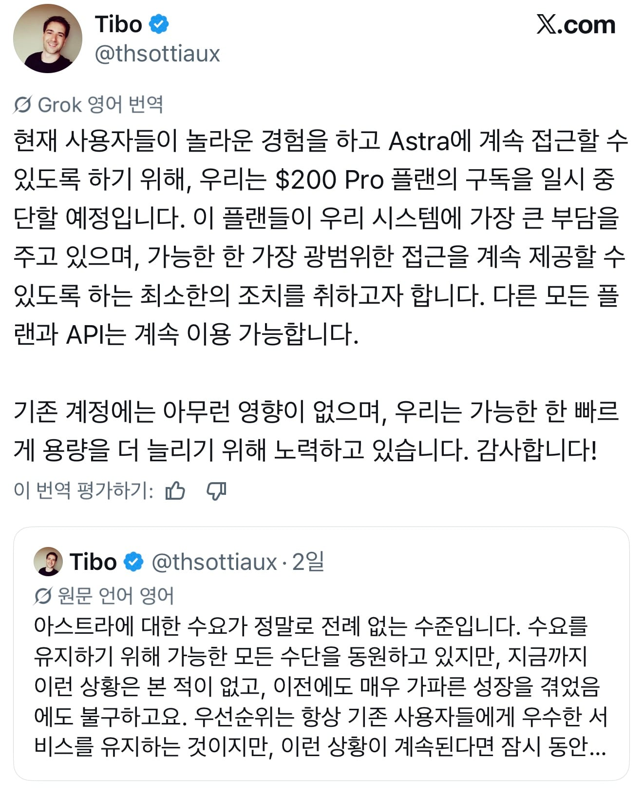
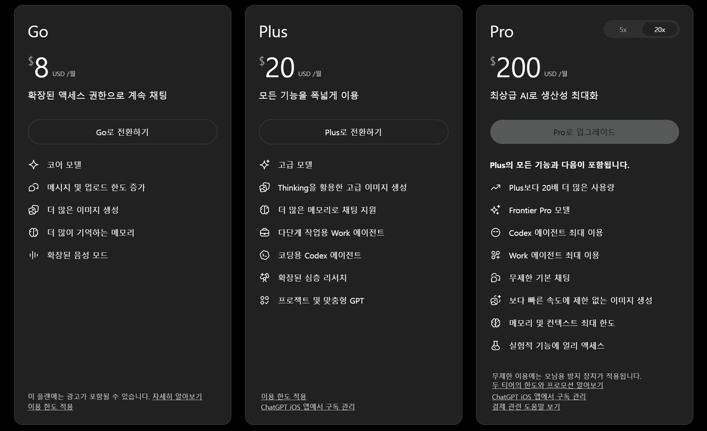
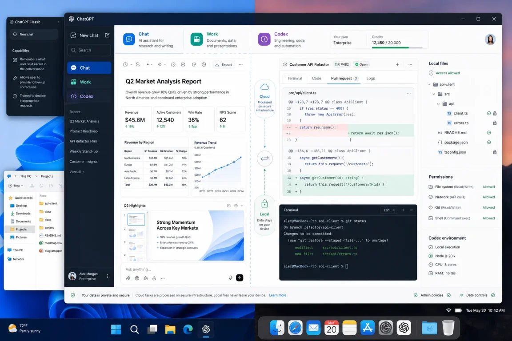

오늘자로 챗지피티 월 30만원짜리 Pro X20 신규가입이랑 업그레이드가 막힘
사실 잘 모르면 챗지피티에 월 30만원을 태우는 사람이 있다는 것도 신기한데
정작 존나 쓰는 사람들한테는 이게 제일 싼 요금제였음

챗지피티 월정액은 대충 월 3만원, 16만원, 30만원짜리가 있음
작업에 쓸 수 있는 양은 각각 1배, 5배, 20배임
다 쓰면 따로 충전해야 됨
충전 가격 대충 환산하면 500크레딧에 2.9만원임
Plus 요금제 한 달 사용량이 약 9,400크레딧 정도 되는데
20배 주는 30만원짜리 요금제 사용량만큼 쓴다고 가정하면
Plus(월 3만) + 부족한 양 충전 = 약 1,000만
Pro x5(월 15만) + 부족한 양 충전 = 약 830만
Pro x20 = 30만
월정액 아끼려고 싼 거 골랐다가 부족분 충전하면 중고차 한 대가 사라짐ㅋㅋ
대체 챗지피티로 뭘 하길래 저걸 다 쓰냐 싶을탠대
가볍게 AI 쓰는 사람들이 밥 뭐 먹을지 물어보고 사진 몇 장 바꿀때 제대로 쓰는 사람들은 자료 조사시키고 엑셀 정리시키고 프로그램 짜게 하고 컴퓨터 반복 작업까지 맡김
요즘은 그냥 지시만 해두면 이걸 원큐에 다 해줌

챗지피티 그냥 폰이나 웹으로 채팅만 계속 썼으면 체감 못하겠지만
5.6부터 본격적으로 나온 데스크톱 앱은 예전 오픈클로 이상으로 사용자 데스크톱 전체 (권한 부여 아래) 제어부터 분석 실행까지 다 함
특히 아스트라 나오고 나서부터는 이게 된다고? 싶은 수준으로 회사 에이스마냥 개떡같이 말해도 처음부터 끝까지 알잘딱으로 다 해내고 결과물에 보고까지 알림으로 해줌 ㅋㅋㅋ
디시 특갤은 원래 X20을 쌀먹이라고 불렀는데 이번에 막히고나서 올게 왔다는 분위기임
게임도 대신해주나?